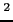

The shed, which is a single room building located in a forest near Effretikon (Switzerland), covers an area of 64m (12.8m x 5.75m). Stable plastic walls (height 50cm) divide the area in to four sectors and an entry space. Small transit holes in the dividers ensure access to the different sections (see figure  on page
on page  ).
).
The entry area provides workspace for the researchers and is used to store tools and material. Furthermore the central computer for the data collection system (see section  on page
on page  ) as placed in this area.
) as placed in this area.
The 40 artifical nestboxes (see figure  on page
on page  for a schematic model) are distributed in the four sectors (see figure
for a schematic model) are distributed in the four sectors (see figure  on page
on page  for the current positioning of the boxes) along with some plastic pipe structures, bricks and smaller plastic walls and shelters where the mice can climb, hide and play (see figure
for the current positioning of the boxes) along with some plastic pipe structures, bricks and smaller plastic walls and shelters where the mice can climb, hide and play (see figure  on page
on page  ).
).
|
|
|
|
In addition, there is one dedicated pipe which connects the interior to the outside world, allowing the mice to freely leave or enter the shed. This connection is not included in the data mentioned in section  on page
on page  .
.